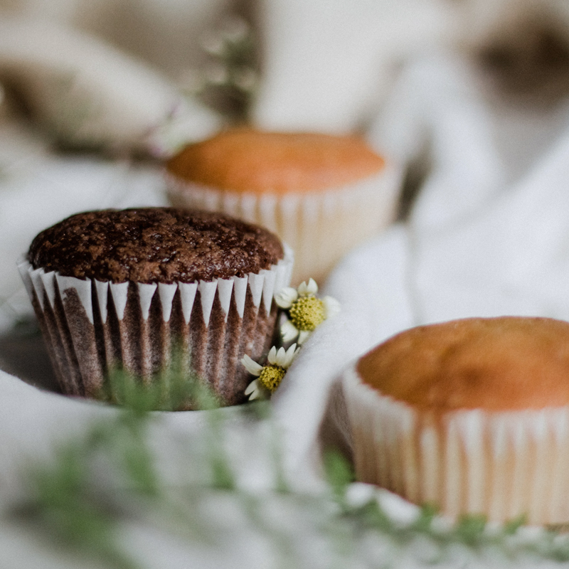

ITEMS


定番のフランス菓子を中心に常時15〜20種類ご用意しております。
北海道産バターや契約農場から直送の卵、フランス産チョコレート等、こだわりの材料を使用。
じっくり素材に向き合い、天気とも相談し、丁寧にお作りしています。
目にも美味しい「pâtisserie TSUCHIDA」のお菓子をぜひご賞味ください。
配送について
焼き菓子は、宅配便（代引き）にて発送可能です。
ご本人様以外がお受け取りの場合、事前お振込をお願いしております。ご了承ください。
詳細・送料につきましては、お問い合わせください。
ラッピングについて
焼き菓子は、+300円で箱詰めとラッピングを承っております。
詳細につきましては、お問い合わせください。